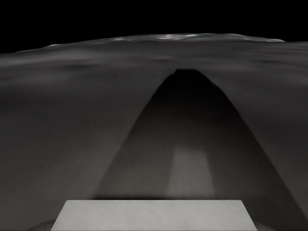

Landing pad
VerifiedDone at hour 72 of a 336-hour deadline, after 2 repairs
336H
to build two structures with seven robots, and nothing to recharge from
What was asked
A 20 m landing pad and a 40 m blast berm near Shackleton crater, in 14 days. Every battery is the whole job’s budget.
LS-1, the site in the brief
About 1.8 km from the rim. Bronze is the berm’s sintered crest, the part the solver will push back on. Dashed rings: one robot at a time. Not to scale.
Brief
Landing pad: circular, 20 m across. Dig a bowl 0.4 m deep to firm regolith, compact the subgrade, then sinter a 30 cm regolith surface. Blast berm: a 40 m arc on the north side, 1.5 m high and 4 m wide at the base, built from the pad’s spoil, compacted, with a sintered crest. Both complete and inspected within 14 days. Read by Nemotron 3.5 Lightning in 7.3 s.
Fleet, each battery the whole job’s budget
| EX1, EX2 | excavators | 5,000 Wh each |
| HL1, HL2 | haulers | 3,000 Wh each |
| CP1 | compactor | 3,500 Wh |
| PR1 | printer | 4,000 Wh |
| SV1 | surveyor | 1,500 Wh |
4,095WH
95 Wh overneeded for the printing. PR1, the only printer, carries 4,000.
The first plan is refused
Nemotron 3 Ultra proposes 12 tasks. CP-SAT checks every battery and sends back the proof: the printing needs 95 Wh more than PR1 carries.
Refusedenergy:printer
Core sent back to Nemotron Refused
energy:printer Printer tasks need at least 4,095 Wh: 4,078 Wh of work and 18 Wh of travel. PR1 carries 4,000 Wh.
The printer’s tasks
| T9 Sinter the pad | 314 m² | 2,702 Wh |
| T10 Sinter the berm crest | 160 m² | 1,376 Wh |
| Travel | 18 Wh |
145M²
Fitsof berm crest, down from 160; the printing now needs 3,966 Wh
Two repairs from the proof
Nemotron reads the numbers and sinters less of the crest. 150 m² is still 9 Wh over; 145 m² fits. Drag the slider to try it.
Repair 1 · 45 s Refused
T10 crest 160 → 150 m², 1,376 → 1,290 Wh. The printer still needs 4,009 Wh, 9 over.
Repair 2 · 18 s Verified
T10 crest 150 → 145 m², 1,247 Wh. T12 now waits for T10 and T8. The model’s own note: “reduced to meet printer battery”.
72H
Verifiedof a 336-hour deadline, proven optimal in 13 ms
Proven: done at hour 72
CP-SAT schedules all 12 tasks: every order, zone and battery holds, and no schedule finishes sooner.
72 h used336 h
T10, the crest refused twiceT9, PR1’s other taskother robots’ tasks
CP-SAT’s receipt Verified
| Precedence | 18 edges hold |
| Robots | 7, no overlaps |
| Safety zones | 2, one robot each |
| Batteries, with travel | PR1 3,966 of 4,000 Wh |
| Status | optimal, re-checked independently |
Tasks, in start order
| T1 Survey the pad | SV1 | 0–3 h |
| T3 Dig the pad, part 1 | EX1 | 3–12 h |
| T9 Sinter the pad | PR1 | 34–57 h |
| T10 Sinter the berm crest | PR1 | 60–71 h |
| and 8 more | ||
72.7H
every task done, 263 h inside the deadline, after hauler HL2’s drive failed at hour 1.5
Broken, not blocked
HL2 makes no headway for 15 minutes on its way to Z2. NVIDIA Cosmos Reason 2 looks through its camera: nothing at the nose, so the drive has failed. CP-SAT gives its hauls to HL1 in 0.01 s.

Flat and grey, with no visible obstacles3 of 3 readings: a clear road
- 1.73 h
- HL2 makes no headway for 15 min
- 64 s
- Cosmos Reason 2 reads its camera: a clear road
- 0.01 s
- CP-SAT replans 12 tasks; HL1 takes over
- 72.7 h
- every task done
Events
| 1.50 h | Isaac Sim locks HL2’s wheels on its way to Z2: the real fault, which the rover does not know |
| 1.73 h | No headway for 15 min, 34.1 m short of Z2: the health check flags a stall |
| +100 s | Cosmos Reason 2-8B reads the navigation camera: blocked 0, clear 3. 20 s to load, 64 s to answer; the mission clock waits |
| 0.01 s | A clear road means a fault: CP-SAT replans 12 tasks without HL2; HL1 takes T5 and T6 and reaches Z2 at 4.65 h |
| 72.7 h | Every task done; 0.7 h past the plan, which counts whole hours |
The other answer
In the A/B run a rock stops CP1, the only compactor. With its camera, Cosmos says blocked: CP1 backs up, goes around, and the pad is done at 72 h. The same rock without a camera: CP1 is written off, and CP-SAT proves the pad can never be finished.
72H
Planned finish
Pick a robot and an hour, then break it. Moonwright replans the crew and tells you when the pad is done.
Break one yourself
Loading the site in 3D…
Hour 10the plan as scheduled
excavatorhaulercompactorsurveyor, printerbroken
RASSOR model: NASA · robots drawn 3× life size
All 504 breakdowns: every robot, every hour no replan late on time nothing to replan
This breakdown
| Break a robot to fill this in. |
All 504 breakdowns
| Replanned, on time | 21 |
| Replanned, 1–8 h late | 31 |
| No replan: no robot left to do the work | 187 |
| Nothing to replan | 265 |
Each was computed ahead with the same code as the live replanner, POST /simulate, without a model call.
86%
of runs on time with three spare robots, up from 37 %
How often it holds
200 simulated runs, each with random breakdowns. As planned, 74 finish on time. With a spare printer, compactor and surveyor, 172 do.
74 of 200 on time · 95 % interval 31–44 %
172 of 200 on time · 95 % interval 81–90 %
Outcomes of 200 runs, as planned
| Finished on time | 74 |
| Lost every robot of a type | 119 |
| Replan proved infeasible | 7 |
Robots the plan cannot lose
| PR1, the only printer | in 88 misses |
| CP1, the only compactor | in 21 |
| SV1, the only surveyor | in 24 |
Impossible deadline
No planNeeds 85 h; the deadline is 60 h. Proven after 3 refused repairs
60H
until a heavy cargo lander’s window opens; it cannot be delayed
What was asked
A 30 m heavy-lander pad and a 70 m spoil berm. The brief forbids a smaller pad, and the pad is one zone: one robot inside at a time.
LS-1, the site in the brief
A 30 m bowl, 0.4 m deep, and a 70 m berm built from its spoil. No printer on site. Dashed rings: one robot at a time. Not to scale.
Brief
Heavy-lander pad: circular, 30 m across, dug 0.4 m to firm regolith across the full footprint (about 283 m³), subgrade compacted and inspected. Spoil berm: a 70 m arc on the north side, 2 m high and 4 m wide, built from the pad spoil and compacted. 60 hours. The lander cannot be delayed and the pad cannot be made smaller. Plume and dust safety allow one robot inside the pad at a time. Read by Nemotron 3.5 Lightning in 3.8 s.
Fleet: energy is not the problem here, time is
| EX1, EX2 | excavators | 5,000 Wh each |
| HL1, HL2 | haulers | 3,000 Wh each |
| CP1, CP2 | compactors | 3,500 Wh each |
| SV1 | surveyor | 1,500 Wh |
75H
15 h overof work in the pad zone, where only one robot may work at a time
The first plan is refused
Nemotron 3 Ultra proposes 8 tasks. CP-SAT proves they cannot fit: the five pad tasks need 75 h in one zone, and the berm cannot start until the digging ends.
Refusedhorizonzone:Z1
Core sent back to Nemotron Refused
horizon zone:Z1 The plan cannot finish within 60 h: the longest chain alone needs 52 h with the drive to its first zone. Zone Z1 admits one robot at a time, so its 5 tasks, 75 h in total, cannot overlap.
The 8 tasks
| T1 Survey the pad | Z1 | 5 h |
| T2, T3 Dig the pad | Z1 | 21 h each |
| T4, T5 Compact the pad | Z1 | 14 h each |
| T6, T7 Haul to the berm | Z2 | 12 h each |
| T8 Compact the berm | Z2 | 11 h |
3Repairs
All refusedeach reorders the same 8 tasks; none gets under hour 60
Three repairs, all refused
Nemotron reorders the work three times. Each round comes back with numbers: an 82 h critical path, or the pad zone’s 75 h again. The work itself cannot shrink.
Rounds
| First plan · 47 s | horizon zone:Z1 | 75 h in Z1 |
| Repair 1 · 62 s | critical path | 82 h |
| Repair 2 · 49 s | horizon zone:Z1 | 75 h in Z1 |
| Repair 3 · 142 s | critical path | 82 h |
The chain that will not fit
T1 → T2 → T3 → T6 → T7 → T8: survey, both digs, both hauls, compact the berm. 82 h in sequence against a 60 h horizon. A dig-to-haul edge cannot be dropped: the berm is built from the pad’s spoil.
85H
No planthe earliest finish CP-SAT can prove: 25 h past the deadline
No plan, and the reason
Rather than shrink the pad the brief forbids, Moonwright stops and says what would work: open the window at hour 85. On the impossible briefs in the evaluation, 7 of 9 runs ended this way.
extend_horizonCP-SAT optimal
“Finishing needs 85 h, 25 h past the 60 h deadline.”
Advice Proven
| Kind | extend_horizon |
| Earliest finish | 85 h, optimal |
| Past the deadline | 25 h |
| Work trimmed | none |
In the evaluation
On the three briefs built to be impossible, 7 of 9 Nemotron 3 Ultra runs ended without a plan, 5 of them with advice CP-SAT proved. The 2 that verified had cut 10–40 % of the work and are counted out of scope.
Tight deadline
VerifiedDone at hour 52 of a 72-hour deadline, after 1 repair
72H
until a crew lander arrives on day four; the berm must be done
What was asked
A foundation pit, a 70 m plume berm and a borrow strip, 400 m north of the landing pad. The site lead prefers one structure at a time, but that yields to the deadline.
LS-1, the site in the brief
Pit and strip are separate zones, so both excavators may dig at once. Bronze is the berm zone, where every haul has to queue. Not to scale.
Brief
Foundation pit: 12 m by 12 m, 1.0 m deep (about 144 m³), base levelled and compacted. Plume berm: 70 m straight, 2 m high and 4 m wide (about 280 m³ of fill), from the pit spoil and the borrow strip, compacted in one lift and inspected. Borrow strip: 40 m by 6 m, 0.5 m deep (about 120 m³). Three days. The surveyor stakes the pit and the berm line first and inspects the berm last. Read by Nemotron 3.5 Lightning in 4.6 s.
Fleet, each battery the whole job’s budget
| EX1, EX2 | excavators | 5,000 Wh each |
| HL1, HL2 | haulers | 3,000 Wh each |
| CP1, CP2 | compactors | 3,500 Wh each |
| SV1 | surveyor | 1,500 Wh |
13Constraints
Refusedin the core: the deadline, 10 order edges, the surveyor and the berm zone
The first plan is refused
Nemotron 3 Ultra proposes 14 tasks. Each limit fits on its own, yet no order of the 14 tasks finishes by hour 72. CP-SAT sends back the 13 constraints that clash.
Corehorizonzone:Z2robot:SV1T1→T5T2→T5T3→T4T4→T9T5→T6T6→T7T7→T8T9→T10T10→T13T13→T14
Core sent back to Nemotron Refused
The plan cannot finish within 72 h. The longest chain alone needs 64 h with the drive to its first zone; the excavators need at least 20 h. SV1 runs one task at a time, and its 3 tasks take 5 h plus at least 5 h of driving. Zone Z2 admits one robot at a time, so its 7 tasks, 49 h in total, cannot overlap.
The 10 order edges in the core
| T3→T4→T9→T10→T13→T14 | 60 h chain |
| T2→T5, T5→T6 | 58 h chain |
| T1→T5 | 56 h chain |
| T6→T7, T7→T8 | 31 h chain |
17Tasks
Fitsfrom 14: the digs split into parts, each haul right after its part
One repair from the core
Nemotron splits the pit into three digs and the strip into two, and hauls after each part instead of after the whole dig. The longest chain drops from 60 h to 47 h.
Repair 1 · 260 s Verified
| Removed | T3–T10: two digs per structure, four long hauls |
| Added | 3 pit digs, 2 strip digs, 6 hauls |
| Kept | stakes, compaction, inspection |
Why it fits now
Hauling starts at hour 15, after the first 7 h pit dig, instead of after the whole pit. The hauls alternate between pit spoil and strip fill, so zone Z2 works without a gap from hour 15 to 52.
52H
Verifiedof a 72-hour deadline, proven optimal in 0.04 s
Proven: done at hour 52
CP-SAT schedules all 17 tasks: 20 order edges, 7 robots and 3 zones hold, and the berm zone works without a gap from hour 15 to 52.
52 h used72 h
berm zone Z2, one robot at a timepit and strip
CP-SAT’s receipt Verified
| Precedence | 20 edges hold |
| Robots | 7, no overlaps |
| Safety zones | 3, one robot each |
| Tightest battery | HL1, 66 % of 3,000 Wh |
| Status | optimal, re-checked independently |
Berm zone, in order
| Stake the berm line | SV1 | 6–8 h |
| Six hauls, pit and strip in turn | HL1 | 15–39 h |
| Compact the berm | CP2 | 39–50 h |
| Inspect the berm | SV1 | 50–52 h |